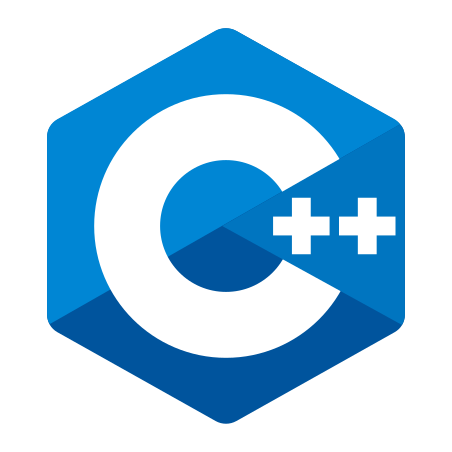
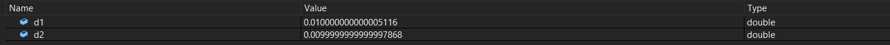

Unit 2 - Introduction to C++
A simple C++ program
Every C++ program is composed of statements.
These are instructions that let the computer know what to do when they reach the statement itself.
Statements in C++ usually end with a ;
In C++, statements are usually grouped into units called functions
A function is a collection of statements that execute sequentially (from top to bottom)
Every C++ program must have a special function named main.
When the program is run, the statements inside of main are executed in sequential order.
Programs typically terminate after the last statement in the main function has been executed.
Comments
A comment is a note programmers leave in their code in order to make it more understandable.
Comments are ignored by the compiler
The single-line comment starts with // and instructs the compiler to ignore everything from the // symbol until the end of this line
The /* and */ symbols denote a multi-line comment. Everything in between the symbols is ignored.
In order to create more interesting programs, we have to work with data
Data is stored inside the computer's memory. C++ allows assigning a name to a piece of memory and then reusing that memory by referencing it by its name.
A piece of named memory is called a variable
Every variable has
- Name (identifier)
- Address (memory location)
- Type (int, float, char, etc.)
- Value
Variables are created using the following syntax:
int x; // Declare the variable named x of type int
x = 5; // Define the variable with the value of 5
Or, we can declare and define the variable in one step:
int x = 5;We can have multiple variables and use them to perform arbitrary calculations
int x=5;
int y=4;
std::cout << x*y << std::endl; // Prints 20
We can also define multiple variables of the same type with 1 statement
int x=5, y=4;
std::cout << x*y << std::endl; // Prints 20
Variable types
A data type tells the compiler what type of value (e.g. a number, a character, text, etc…) the variable will store.
In our previous examples, we used variables of type int, which means that the variable will hold an integer.
A variable's type must be known at compile-time and cannot be changed. This means that int can hold only integer values
Therefore, if we attempt to do this
int number = 3412;
number = "Some text";
We will get a compilation error
| Scalar types | Composite types |
|
|
bool
A variable that can hold 2 values - either true or false
Logic operators (&&, ||, !) can be used on bool variables
char
A variable that can hold a number in the range [-128;127], representing a printable character (more on characters later)
int
A variable that can hold an integer number in the range [-231; 231-1] (on most architectures)
The range can be different on different operating systems. C++ guarantees that it is at least 2 bytes
Supports arithmetic operations, such as +, -, *, /, % and comparison operators, such as ==, !=, <(=), >(=)
float & double
In order to deal with floating point numbers, C++ offers 3 types
- float
- double
- long double
(!) Squeezing infinitely many real numbers into a finite number of bytes requires an approximate representation
| Type | Minimum size | Typical size | Precision (number of significant digits) |
| float | 4 bytes | 4 bytes | 6-9 significant digits |
| double | 8 bytes | 8 bytes | 15-18 significant digits |
| long double | 8 bytes | 8, 12, or 16 bytes | 33-36 significant digits |
Memory representation (float)

Image taken from GeeksForGeeks
The number represented is equal to (-1)s.m.2e, where s is the sign bit, m is the mantissa and e is the exponent
Floating point literals
Try to guess the output of the following program
By default, the literals of real numbers are of type double. Use 1.0f for a float literal
What we see here is a rounding error. This is why comparing real numbers with != and == is not effective
Comparison of floating point values
What does the debugger say?
A way of solving the problem
Using iostream for output
The input/output(I/O) library is part of the C++ standard library that deals with basic input and output.
We already used it to print "Hello, C++" to the screen.
The I/O library contains a few of predefined variables for us to use
One of the most useful is std::cout
It allows us to send data to the console to be printed as text by using the << operator
The << operator can be used multiple times to concatenate multiple pieces of output
What is std::endl?
It prints a newline character to the console (causing the cursor to go to the start of the next line)
Consider the difference between these 2 snippets
std::cout << "Hello!" << std::endl << "I am learning C++";
/*
Hello!
I am learning C++
*/
std::cout << "Hello!";
std::cout << "I am learning C++";
/*
Hello!I am learning C++
*/
There is another way to print a newline character
std::cout << "Hello!\nI am learning C++";
\n is a newline character. When we use the backslash symbol in a string, the following character will be interpreted in a different way (escaped)
Another example of such character is the tabulation character \t
The \n character can also be used in a standalone way
int x = 5;
std::cout << "x is equal to " << x << '\n';
Notice the singular quotes here. They are used to represent characters. More on that later
Final disclaimer
Prefer '\n' over std::endl, as it is more efficient
std::endl does an unnecessary flush to the console, which is done by std::cout anyway
Using iostream for input
std::cin is another predefined variable in the iostream library
It allows reading input from the keyboard by using the >> operator
The input must be stored into a variable
As with std::cout, we can input more than 1 value with a single statement
Constants
Constants are variables whose value cannot be changed
Any constant variable has to be initialized when it is declared
Constants are created using the const keyword
const int x = 6;
x = 5; // Compilation error
const int y; // Compilation error
That was it :)